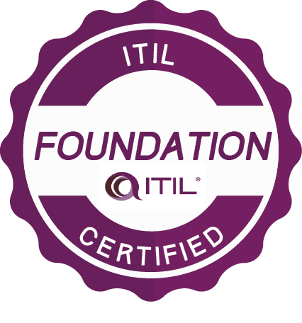

Gary LewisInfomation Systems Specialist II I am a Information Systems Specialist with 20+ years experience. I am A+ and ITIL Foundations certified. I am experienced with Visual Basic, C#, PowerShell, Python, JavaScript, Java, VBScript, and Batch languages. I have advanced computer troubleshooting and configuration knowledge. I am currently working on a Server Team, administering, troubleshooting, and building Virtual & Physical Servers. |
|
|  |
| Years | Company | Title |
|---|---|---|
| 2020-Current | State of West Virginia Office of Technology | Information Systems Specialist II |
| 2007-2020 | DXC Technology, Supporting ATT call centers | Senior IT Analyst I |
| 2005-2007 | Offutt, Fisher & Nord Attorneys at Law | IT Systems Administrator |
| 1999-2005 | Applied Card Systems | Senior Desktop Support Specialist |
| 1997-1999 | Marshall Univeristy Community & Technical College | Assistant Computer Technician |
| Computer Troubleshooting | ⭐⭐⭐⭐⭐ | Windows Administration | ⭐⭐⭐⭐⭐ |
| Computer Configuration | ⭐⭐⭐⭐⭐ | Scripting | ⭐⭐⭐⭐⭐ |
| Networking | ⭐⭐⭐⭐⭐ | Programming | ⭐⭐⭐ |
| Software Troubleshooting | ⭐⭐⭐⭐⭐ | Process & Documentation Creation | ⭐⭐⭐⭐⭐ |
| Software Installation | ⭐⭐⭐⭐⭐ | Software Packaging & Scripting | ⭐⭐⭐⭐⭐ |
| VMWare vSphere | ⭐⭐⭐⭐ | Server Support | ⭐⭐⭐⭐ |